Amersfoort was our first destination in the Netherlands. It's about a 30 minute drive southeast from Amsterdam, and you can actually see a building or two in Amsterdam from there, if you go up the 300 foot tower that is. Amersfoort is a classy little town with lots of history, and it's beautiful. Now for the proof...
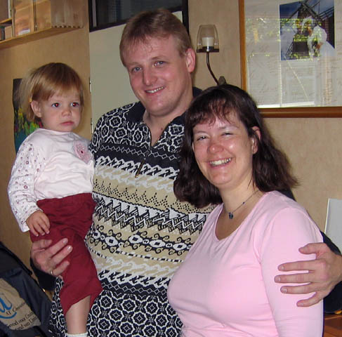
From left to right: Isobel, Roalt, Carlita. Roalt is one of my friends who I've known for years over the internet. He was kind enough to pick me up at Schiphol Airport and set my friend and I up for a night at his place in Amersfoort. Isobel is very shy, and Carlita is a very good cook. That's about all you have to know about these people.
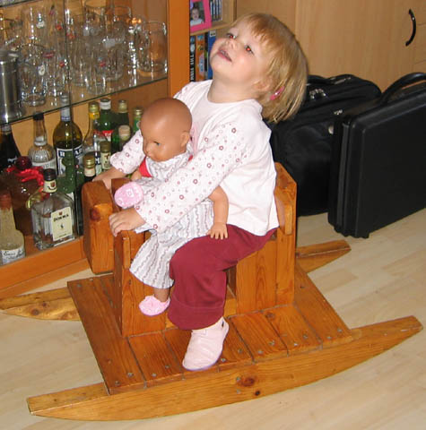
Here's Isobel abusing her ancient-looking homemade rocking horse. The rocker things on the bottom are a bit flat which makes poor Isobel really have to strain to rock the horse. However, she puts enough effort into it to actually move the horse around the room, so it's the floor that really suffers.
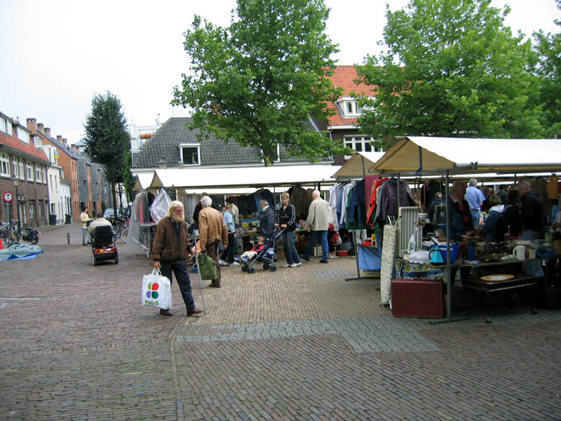
Here's a quaint outdoor flea market in Amersfoort. These markets sell things that are generally more ancient and obscure than you'd see in the states, mostly because ancient and obscure is more commonplace in Europe. I bought a straw bunny doll here. I call it a "scare carrot", because the bunny is menacingly holding a carrot.
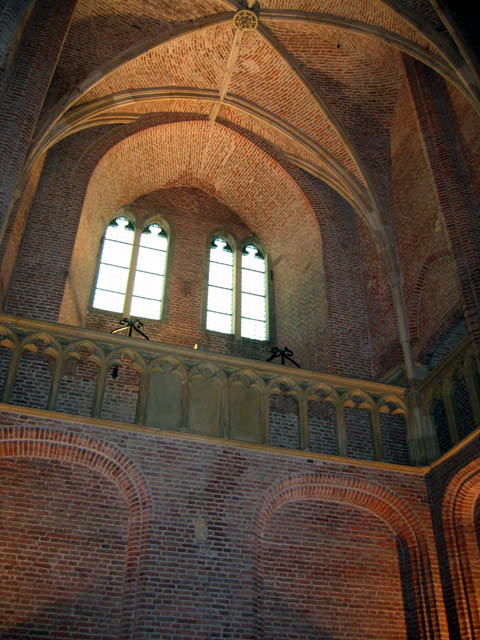
This is the inside of that 300 foot tower I mentioned. It's a wonderful centerpiece for the town, and it has a crapload of stairs that Miller apparently loved going up but not down. I can handle stairs either way, but I would not want to live in this tower.
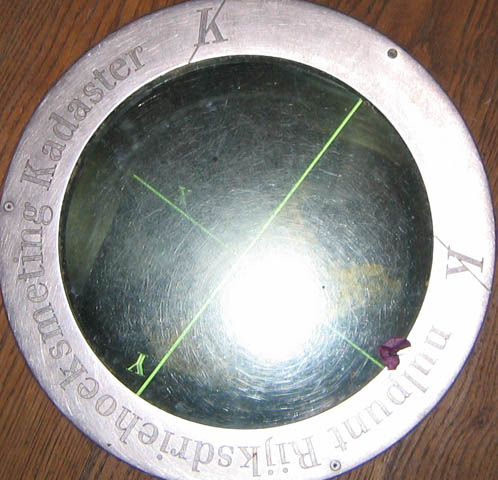
They had a little laser crosshairs display on the ground floor of the tower. If you look straight down it and match up the cross with a dot on a map under the lasers, you can see the location of the tower on the map.
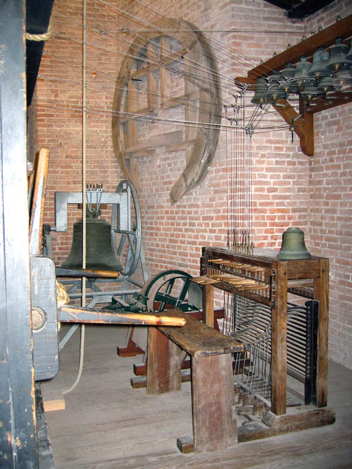
Here's the intricate device that lets a musician ring the bells of the tower.
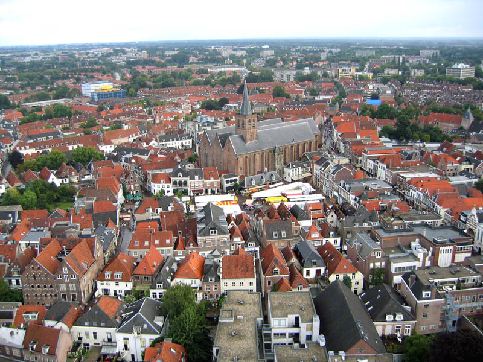
This is just about the best view you'll get of Amersfoort, right here from high up in the tower.
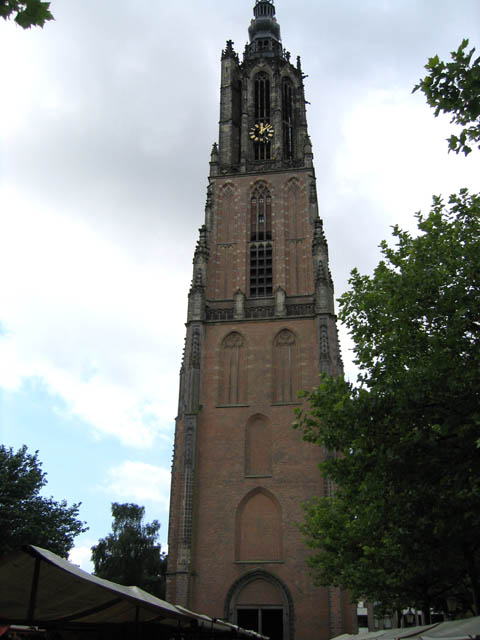
And here's a view of the tower from the outside.
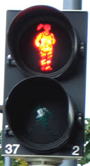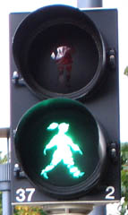
These are the traffic lights in Amersfoort. The town is known for having women instead of men for the walk/don't walk signs.
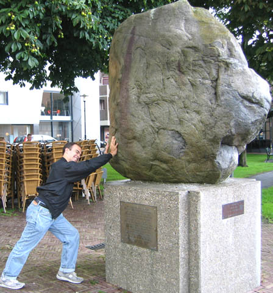
This is a big boulder that has a legend behind it. Long ago, someone bet a bunch of the Amersfoort townsfolk that they couldn't move this boulder a distance of a couple miles I think. Hundreds of townsfolk rose to the challenge and won the bet, at the cost of some lives. The embarrassing boulder was buried later, but then was dug up and proudly put on display. I have to admit, if I died moving this boulder, I would certainly not want it buried.
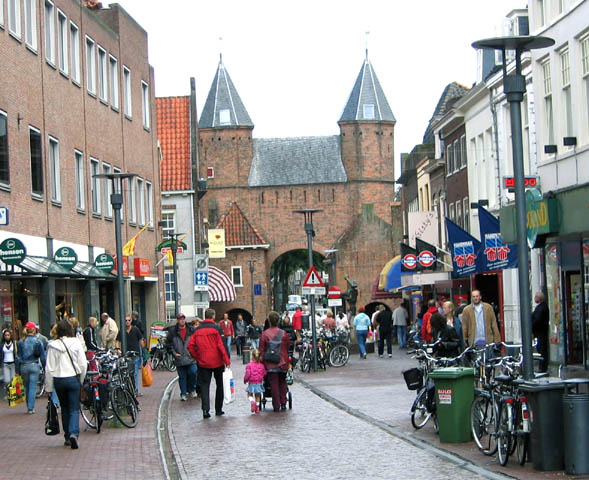
Here's the original gate to Amersfoort. It's connected to a giant wall of houses that surround the inner part of the town. The town's expanded since then, but structures such as these are preserved for tourists like me.
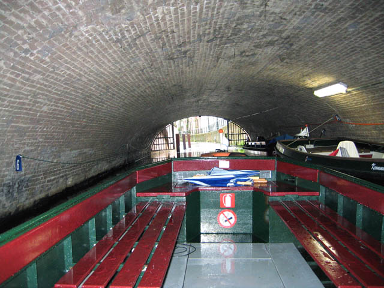
We went on a boat tour around Amersfoort, and here we're just about to set sail out of the tunnel.
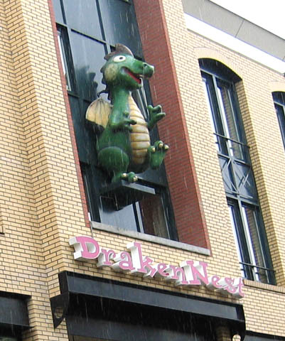
The canal around the city is dotted with interesting artwork, including sculptures such as this goofy dragon.
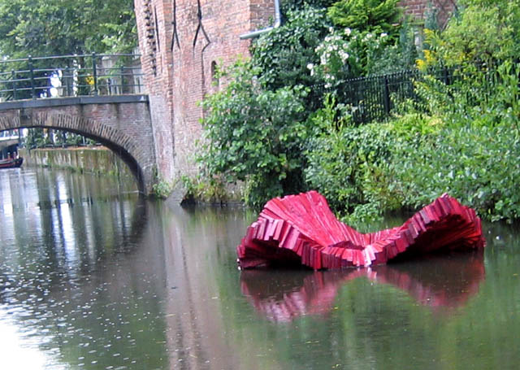
The closest thing to describe this sculpture as is one of those spiced apple rings you get at chinese restaurants.
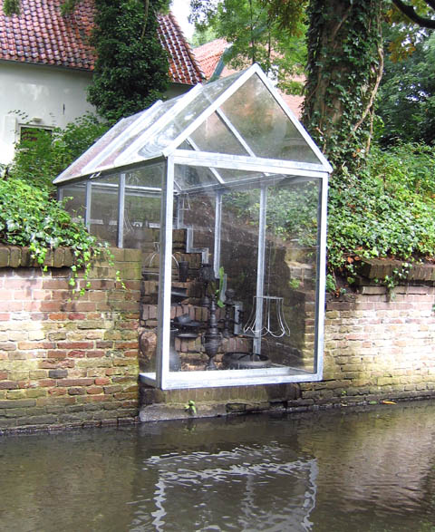
Here's another interesting exhibit along the canal.
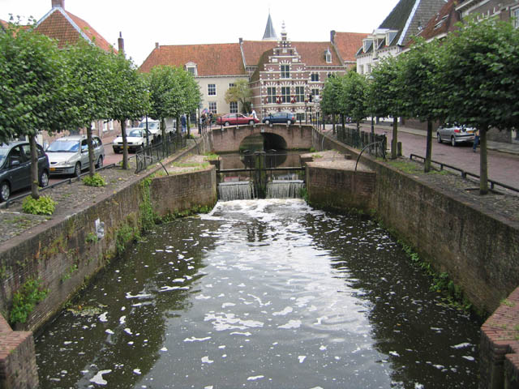
This was taken after the canal tour. It shows locks that separate water levels.
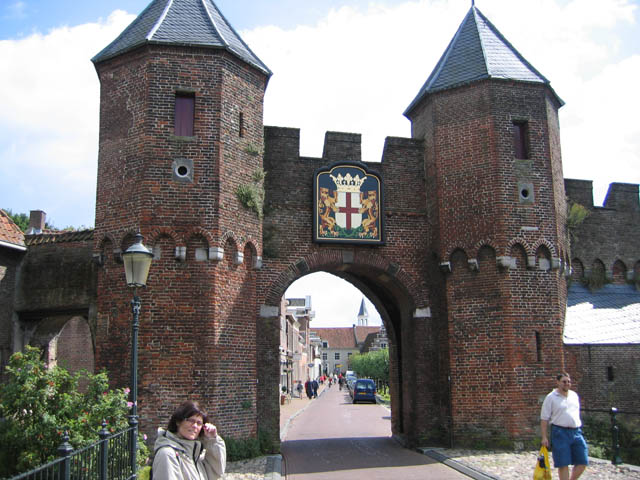
Here's another random archway in Amersfoort.
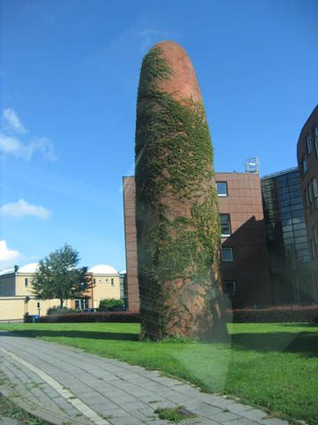
Now we're starting to drive out of Amersfoort, around the nearby towns. I took a picture of this because it looked odd.
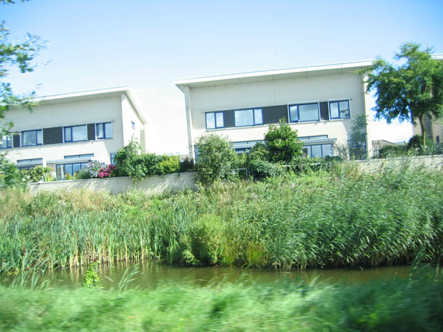
And as we were driving around, we saw these typical Dutch houses.
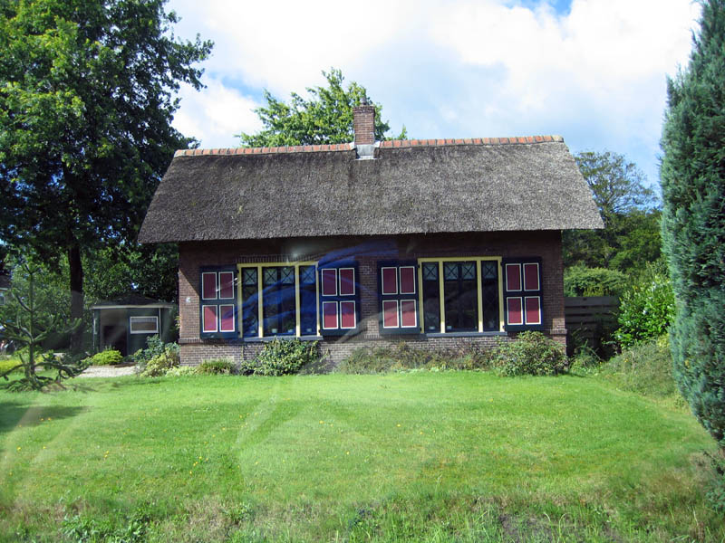
Some houses had straw roofs, which according to Roalt are actually expensive.
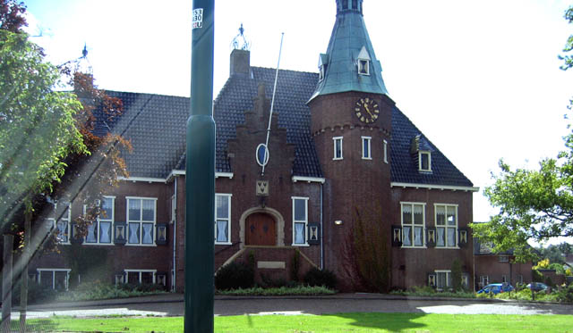
The step-shaped roof facades were typical in the Netherlands during the 19th century.
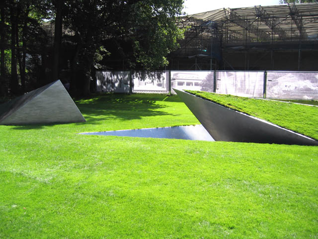
Abstract art seen in front of the Kroller Muller museum in Valuwa National Park.
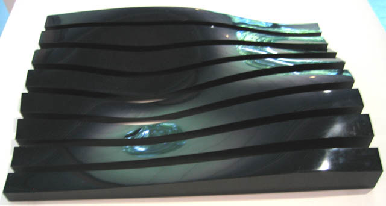
Abstract art seen in the museum.
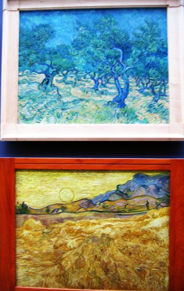
A pair of Van Gogh paintings in the museum. I learned that Van Gogh is pronounced "Von Chawch" by the Dutch. The Ch is pronounced as a hard ch, like with the bread "challah".
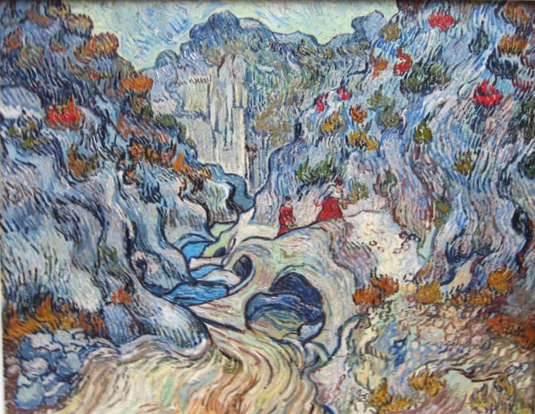
Another Van Gogh. Gorgeous.
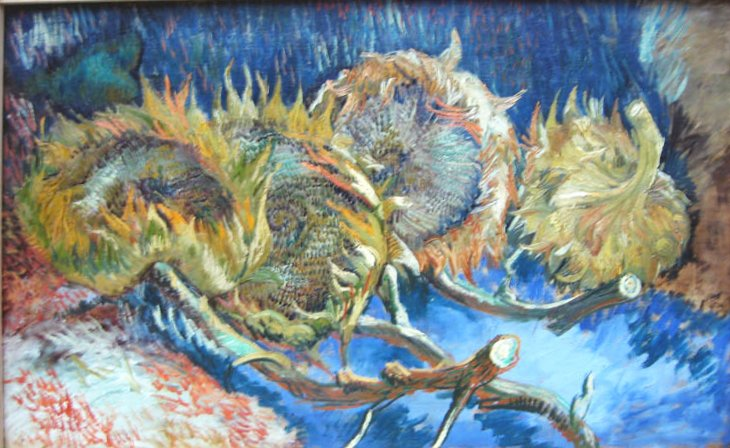
Another Van Gogh depicting sunflowers. I liked this one enough to almost buy a print of it, but then I realized I don't have any spare wall space for it.
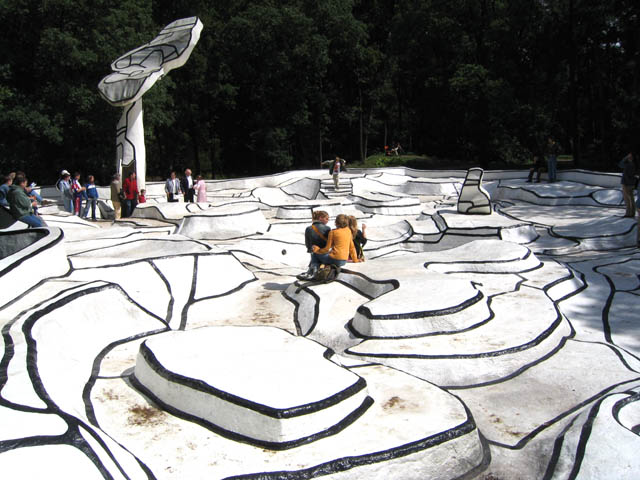
Around the park, there are more sculptures, and this was one of the most impressive ones. It'd make a really cool wading pool.
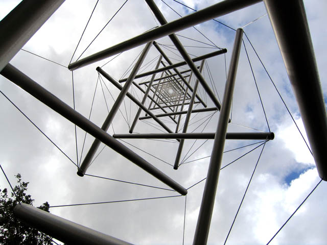
Standing under the center of this tower, the beams form a six-point star.
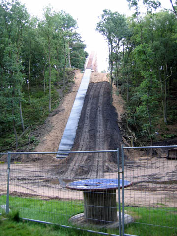
There were a number of exhibits "under construction" in the park, and this was by far the most disappointing. It's a large staircase that gives you a magnificent view, and apparently it was very close to completion. Access denied.
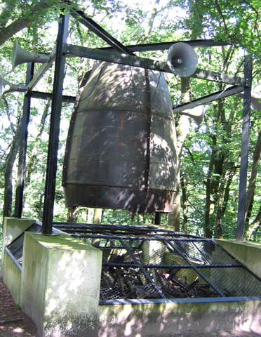
Here's an engineer-minded exhibit entitled "Resonance". It seems like you start a fire beneath the grating and the smoke rises into the contraption, creating a sound that you hear through the speakers/horns/megaphones on top.
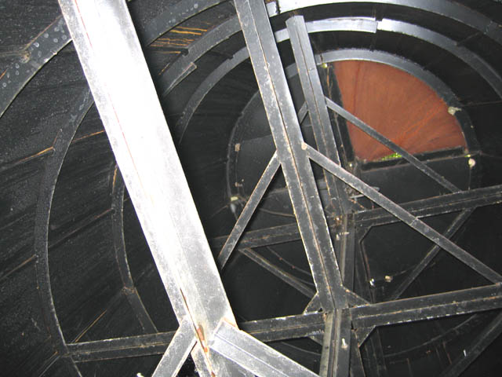
Inside view of "Resonance".
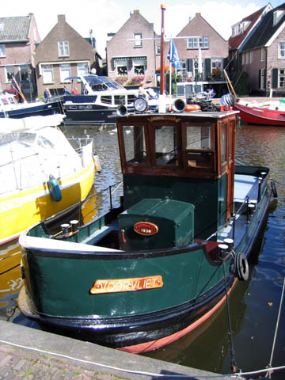
We travelled to Spakenburg, just north of Amersfoort along the water. This is a picture of a boat Miller liked a lot. Whenever he thought something was cool-looking, I took a picture of it.
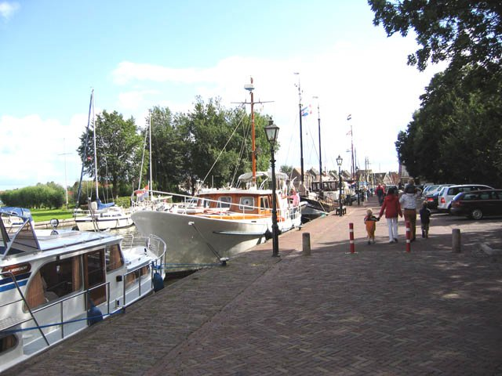
More boats in Spakenburg. Some of them were quite stately and great for private parties.
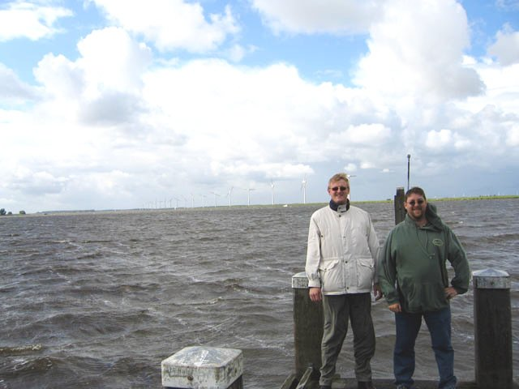
Here's Roalt and Miller on the edge of a pier. The windmills in Spakenburg are well-known in the Netherlands.
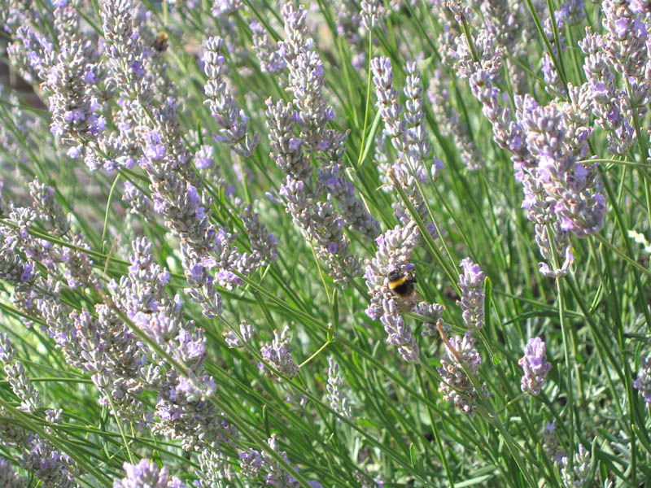
Unlike their human counterparts, Dutch bees work just as hard as American bees.
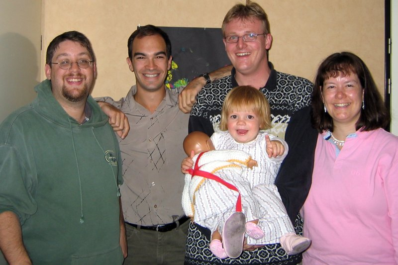
Eventually Isobel softened up to us, and we snapped a group photo before thanking Roalt and Carlita for the accomodations including spinach lasagna, a broccoli-salmon salad, and custard with red berries. These guys also taught us what a Dutch breakfast is like. Lots of bread with lots of spreads.
Back